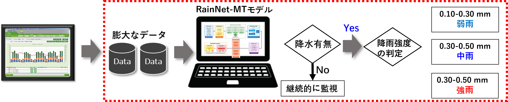
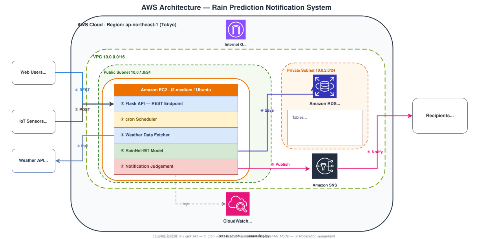

🌧️ RainNet-MT
マルチタスク深層学習による降雨予測フレームワーク Multi-Task Deep Learning Framework for Rainfall Prediction
修士研究のフラッグシップ・プロジェクト。降雨の発生有無と降水強度を単一モデルで同時に予測するマルチタスク深層学習フレームワークの提案・実装。論文を CMC – Computers, Materials & Continua 誌へ投稿（査読中）。研究を 3 つの実装形態で届けています。 The flagship project of my Master's research. A multi-task deep learning framework that jointly predicts rainfall occurrence and rainfall intensity from a single model. Manuscript under review at CMC – Computers, Materials & Continua. Delivered in three forms.

Flask による Python バックエンド + HTML/CSS/JS フロントエンド。REST API 連携。
Flask Python backend + HTML/CSS/JS frontend, connected via REST API.
PyQt5 によるネイティブ GUI。モデルロード、リアルタイム推論、結果可視化を統合。
PyQt5 native GUI integrating model loading, real-time inference, and result visualization.
マルチタスク損失設計と気象データへの適用。査読中。
Multi-task loss design and meteorological application. Under review.
☁️ クラウドへの本番デプロイ実装 ☁️ Production Deployment on AWS
研究を論文だけで終わらせず、本番想定のクラウドシステムとして実装。Amazon EC2 上で ①Flask API → ②cron スケジューラ → ③Weather Data Fetcher → ④RainNet-MT 推論モデル → ⑤通知判断 の 5 段階パイプラインを稼働、Amazon RDS (MySQL) に予測結果を保存。IoT センサー（雨量・水位・土壌）からのリアルタイム観測と外部 Weather API (JMA / OpenWeather) の双方を入力に統合し、Amazon SNS を経由して降雨通知を自前の Web / Desktop アプリへ配信、CloudWatch で全プロセスをロギング。コスト最適化のため、後にさくらのレンタルサーバへ一部を移行する判断も自ら実施。 Took the research beyond a paper and implemented a production-style cloud system. Amazon EC2 hosts a 5-stage pipeline: ①Flask API → ②cron scheduler → ③Weather Data Fetcher → ④RainNet-MT inference → ⑤Notification Judgement; predictions persist to Amazon RDS (MySQL). IoT sensors (rainfall, water-level, soil) stream real-time observations alongside external Weather APIs (JMA / OpenWeather); Amazon SNS publishes rainfall alerts to my own Web / Desktop applications; CloudWatch logs every stage. Later migrated parts of the stack to Sakura Rental Server for cost optimization.
